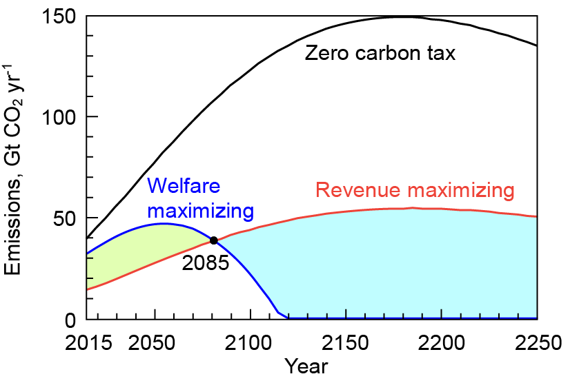

Most economists think a tax on carbon dioxide emissions is the simplest and most efficient way to get us to stop using the sky for disposal of our waste CO2. This tax could be applied when fossil fuels are extracted from the ground or imported, and credits could be given if someone could show that they permanently buried the waste CO2 underground.
This carbon tax would make fossil fuels more expensive. If the tax level continued to increase, eventually using fossil fuels (without underground CO2 disposal) would become more expensive than every other energy technology, and economics would squeeze carbon dioxide emissions out of our economy.
A tax is an anathema to most politicians. One proposal to make such a tax more palatable would be to distribute the revenue evenly on a per capita basis. Due to inequalities in income distribution, this would result in most people receiving a direct net economic benefit. This could make it politically popular. In terms of net transfer, money would be transferred from the rich and given to the poor and middle classes. Thus, a revenue-neutral carbon tax would both help eliminate carbon dioxide emissions and help reduce economic inequality. Sounds like a good thing. (Why aren’t we doing it?)
Another idea would be to institute a carbon tax to generate tax revenue that could then be used to help provide essential services such as health care, education, income subsidies, and so on. Some of the carbon tax could potentially be used to help pay down the national debt, which in the United States now stands at $165,000 per taxpayer.
Today, we have a carbon tax rate of zero and get no carbon tax revenue. When the carbon tax rate is so high that there are no longer any carbon emissions from our energy system, the carbon tax revenue will again be zero. There is some tax level in-between that would maximize revenue generation from the carbon tax. An increase in tax rate beyond this level would reduce carbon dioxide emissions so much that carbon tax revenues would start to diminish.
Whether the proceeds of the tax are distributed on a per capita basis, or used to provide essential services, people will not be happy to see tax rates rise while direct and immediate benefits from the tax decrease. These tax increases could be a tough sell for politicians. Politicians could be motivated to avoid raising the carbon tax rate, so that they can continue providing the benefits of the revenue generation to their constituents. This would result in continued CO2 emissions.
This issue had been nagging me for over a decade, and I have long tried to interest someone in taking the lead on addressing this question. (Avoiding work is one of my key objectives, so my usual strategy is to try to talk people into doing the work that I am trying to avoid doing myself.) Luckily, I was able to talk Rong Wang into addressing this problem. Because Rong is a physical scientist and not an economist, we were fortunate to be able to lure the economist Juan Moreno-Cruz into helping us.
Together, we produced a study titled “Will the use of a carbon tax for revenue generation produce an incentive to continue carbon emissions?”, and published it in Environmental Research Letters, where it is available for free.
The key conclusion is represented in this figure:

Our main conclusions are: For the next decades, the incentive to generate revenue would provide motivation to increase carbon tax rates and thus achieve even lower emissions than would occur at an economically optimal ‘welfare-maximizing’ tax rate. However, by the end of this century, the incentive to generate revenue could result in too low a tax rate — a tax rate that would allow CO2 emissions to persist far into the future.
Overall, I see our result as rather encouraging. Right now, the problem is that we don’t have enough disincentives on carbon emission and politicians are having trouble motivating themselves to provide this disincentive. If revenue generation provides an additional incentive (beyond the incentive of generating climate benefits) to institute a carbon tax, that is all well and good. As mentioned above, these revenues could be distributed on a per capita basis to help combat inequality, or they could be used to provide essential services.
By the end of the century, the incentive to generate revenue could become a perverse incentive to keep carbon taxes low so that CO2 emissions might continue. However, for now, the incentive to generate revenue would motivate increased carbon tax rates, which would cause carbon emissions to decrease.
Given that today’s carbon tax rate is zero, which is clearly too low, the incentive to generate revenue can help motivate politicians to do the right thing for the climate system. That is a good thing.
Where to read more
- The publication this post is about: Will the use of a carbon tax for revenue generation produce an incentive to continue carbon emissions? (Wang et al., 2017 · Environmental Research Letters)
- Published article (doi:10.1088/1748-9326/aa6e8a)
- If cutting emissions pays for itself, why is it so hard to do?